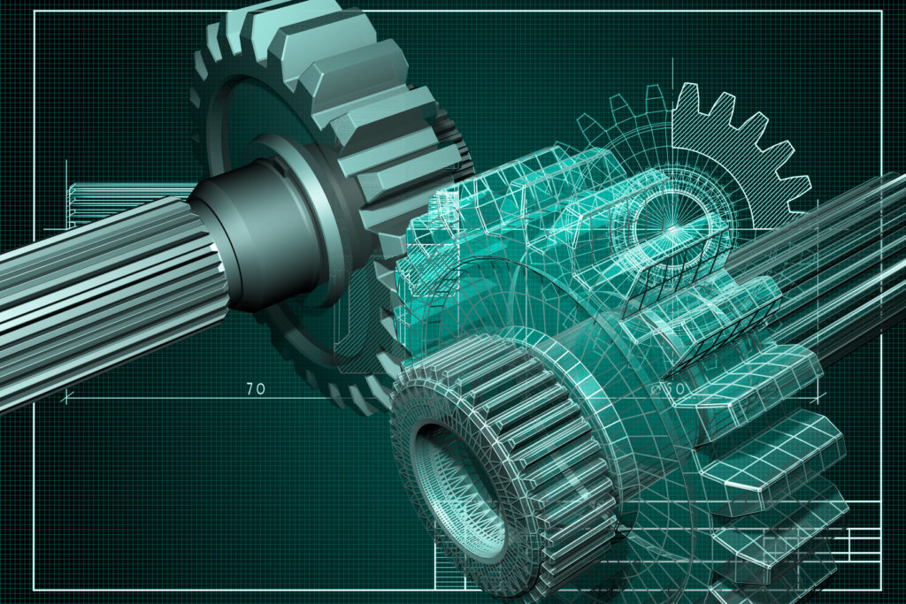
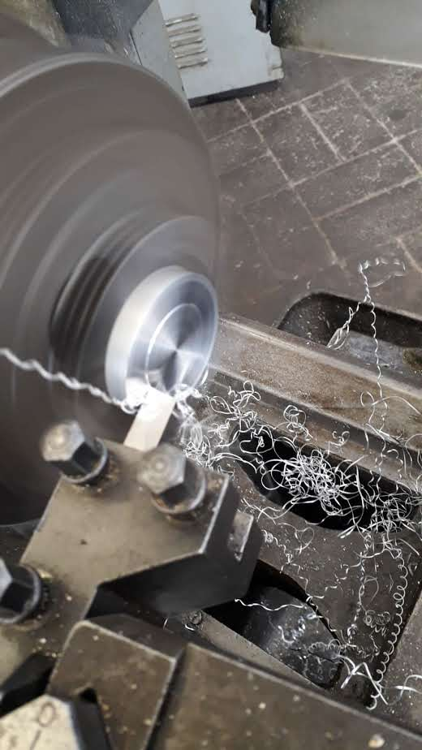
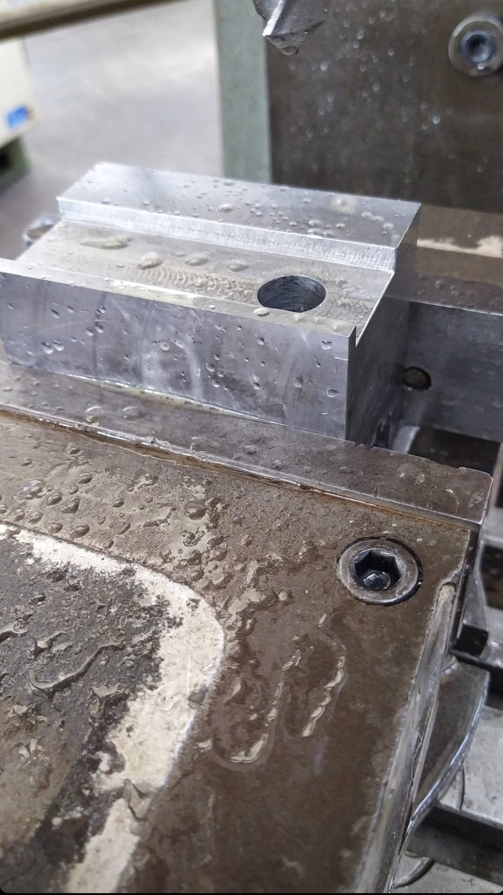
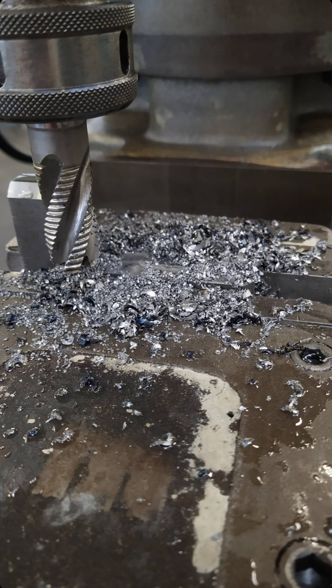

" Una piccola Biografia "
La mia storia riassunta:
2017, dove tutto ebbe inizio.
La mia storia nell’ambito sviluppo parte circa 5 anni fa, il primo anno di scientifico, nel quale facevamo poco
a riguardo ma io e un mio amico dopo scuola, ci divertivamo a provare a creare siti e programmi, molto fatti male pero’ ,
il concetto c’era almeno.

2018, cambio fondamentale?
Nel 2018, cambio tutto! Perche'? chissa'.... cambio indirizzo e tutto, ma la passione per l'informatica rimane
anche se con meno voga. Quindi faccio un "salto"e passo alla meccanica industriale, avendo una profonda passione fin da piccolo
del progettare, creare ed assemblare cose.

2019, il bivio si allarga
Nel 2019, molto preso da cio' che stavo studiando, avevo cominciato ad avere pochissimi approcci con l'informatica,
solo per riparare le cose in laboratorio ecc.. sarebbe potuta essere la morte di una passsione (o la sua sostuzione se vogliamo dire meglio)
pero' fortunatamente non fu' cosi.




2021, anno di riflessione
Arriva il 2020, precisiamente a Giugno, comincio a lavorare come fresatore in un azienda e dopo un po mi viene in mente un
pensiero che mi ha tormentato fino ad ora : E se facessi il programmatore?. Questo pensiero rindondate nella mia testa mi ha fatto ragionare
per tanto tempo, finche' non mi sono messo a cercare effettivamnete corsi di programmazione, le ricerche son durate circa 4 mesi finche',
non ho trovato Start2Impact , beh che dire, un po' titubante all'inizio ma dopo un po' di ricerche ho capito il messaggio che vogliono dare,
e niente...ora ci troviamo qui.
2022, anno di svolta conseguente alle riflessioni
Ed eccomi deciso ad inizio 2022 a provare a cambiare la mia vita, se cosi possiamo dire. Cominciai il corso di IOS Developing
non per altro ho scelto questo percorso per iniziare perche' il mondo apple e' quello che non ho mai provato e quindi e' quello che mi incuriosisce
piu' degli altri. Nel futuro voglio ampliare la mia visione anche al copywriting dato che, come credo si e' notato, non sono tanto ispirato a scrivere,
ma anche al mondo dell' UX/UI.